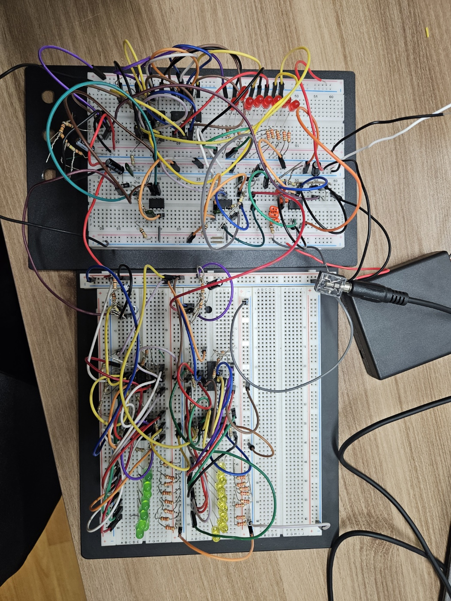

프로젝트 제안 설명
프로젝트 주제를 선정하기에 앞서, 전자회로 과목에서 배웠던 Filter를 응용하고자 하였다. 이에 주파수 대역을 나누어 Band Pass Filter를 이용해, 주파수를 여러 단계로 분리하여 출력 오디오별 단계를 나누고자 했다. 이에 이러한 프로젝트를 선정하게 되었다.
동작 설명 및 회로도
-전체
>동작 설명

주파수 신호를 입력 받아 Band pass filter를 통해 각 대역의 신호만 통과시킨 후 다이오드 정류작용을 통해 교류신호를 직류신호로 변환 후 출력한다. 출력된 신호가 해당하는 회로의 LED를 작동시켜 해당주파수 신호가 오디오 입력에 얼마나 들어있는 지를 알려준다.
>회로도
입력받은 주파수 신호를 3개의 Band pass filter를 통해 각 대역으로 나누어 통과시킨다. 통과시킨 교류신호를 다이오드 정류작용을 이용하여 직류신호로 변환한다. 변환한 직류신호로 LED를 작동시켜, 해당 대역의 주파수 신호가 오디오 입력에 얼마나 들어있는 지를 확인한다.
-Band Pass Filter
>동작 설명


Active Filter(능동 피터)는 OP-AMP를 이용하여 구성된 필터로, 높은 전압이득•높은 입력 임피던스•낮은 출력 임피던스를 가진다. 부하가 내부 회로와 절연이 되어있어 부하 변동은 필터의 특성에 영향을 미치지 않는다.
>회로도 및 시뮬레이션
Active Filter를 이용해 Band Pass Filter를 3개 구성하여, 입력된 오디오 신호를 약 3.5kHz, 500Hz, 25Hz로 나눈다.
-다이오드 정류회로 + 커패시터
>동작 설명


DC 전원단에 붙은 병렬 캡을 바이패스 커패시터(Bypass Capacitor)라고 한다. 위 그림처럼 노이즈 성분(Ac)올 바이패스 커패시터를 통해 GND로 제거함으로써 Dc Stabillzation을 이루기 위해 사용한다. 전원단에는 DC 성분 이외에도 전원단 자체에서 발생하는 노이즈, 기타 노이즈 등에 의해 AC성분이 발생하게 되고 이것이 모듈로 들어가면 발진올 일으켜서 문제가 된다. AC성본은 주파수 성분을 가지고 있기 때문에 Zc =1 /jwc 이므로 주파수가 높아질수록 커패시터의 임피던스는 감소하는 것을 알 수 있다. 이러한 원리로 AC성분은 모듈이 아닌 바이패스 커패시터로 홀러 GND로 제거된다. 보통 전원단에서 발생하는 노이즈는 매우 낮은 주파수에서 발생하기 때문에 uF 단위의 큰 용량의 탄탈 커패시터류를 사용하게 된다.
>회로도 및 시뮬레이션
Band Pass Filter를 통해 나온 주파수 신호를 교류에서 직류로 바꾼다.
-레벨미터 회로
>동작 설명

2N4401 트랜지스터로 입력을 받아 LM324 Op Amp의 (–)부분을 저항으로 서로 연결하고 트랜지스터의 이미터에서 나온 출력을 모든 Op Amp의 (+)부분에 연결한다. 마지막으로 OP Amp의 출력을 LED로 내보낸다. 트랜지스터에서 정류회로를 통과한 직류신호를 증폭시키고 OP Amp의 (+)에 저항을 연결해주어 다음 OP Amp로 갈수록 신호의 크기가 작아진다. 따라서 해당 주파수의 신호가 클수록 더 많은 LED가 켜지며 해당주파수 신호가 오디오 입력에 얼마나 들어있는 지를 알려주는 레벨미터의 역할을 한다.
>회로도
정류회로를 통과한 직류신호를 LED로 표시한다. 해당 주파수의 신호가 클수록 더 많은 LED가 켜진다.
결과
-Band Pass Filter
-다이오드 정류회로 + 커패시터
[커패시터 추가 전] 영상을 보면, 오실로스코프로 측정한 결과, Band Pass Filter를 통과한 교류신호가 다이오드 정류회로를 통과하여 직류신호로 바뀐 것으 알 수 있다.
[커패시터 추가 후] 영상을 보면, 오실로스코프로 측정한 결과, 커패시터를 추가한 후 노이즈가 감소한 것을 확인할 수 있다.
-레벨미터 회로
영상을 보면, 3.5kHz와 500Hz 대역의 LED가 입력신호의 크기에 따라 점등되는 개수가 변하는 것을 확인할 수 있다.
-전체

결과물 영상을 보면, 음악 재생에 따라 3.5KHz와 500Hz 대역의 LED 점등 개수가 달라지는 것을 알 수 있다. 25Hz 대역의 모든 LED가 계속 점등된 상태인데, 주파수 대역을 너무 낮게 잡아 발생한 것으로 예상된다.